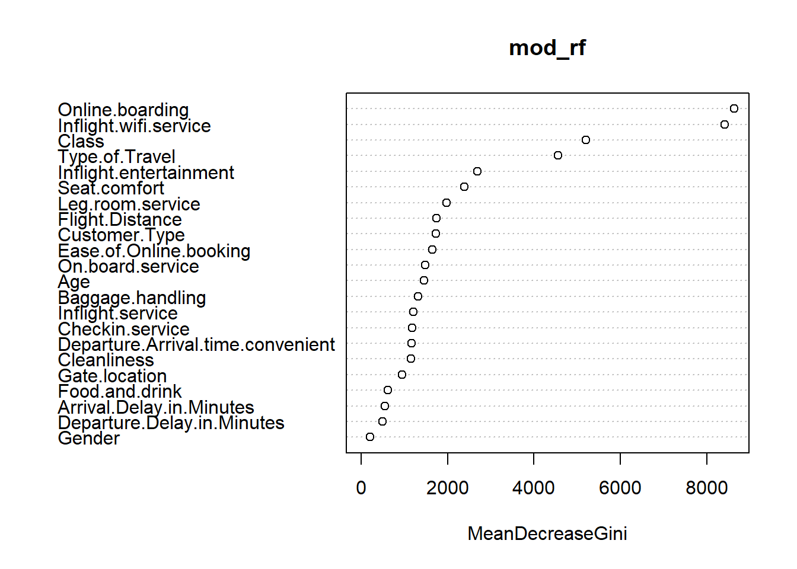
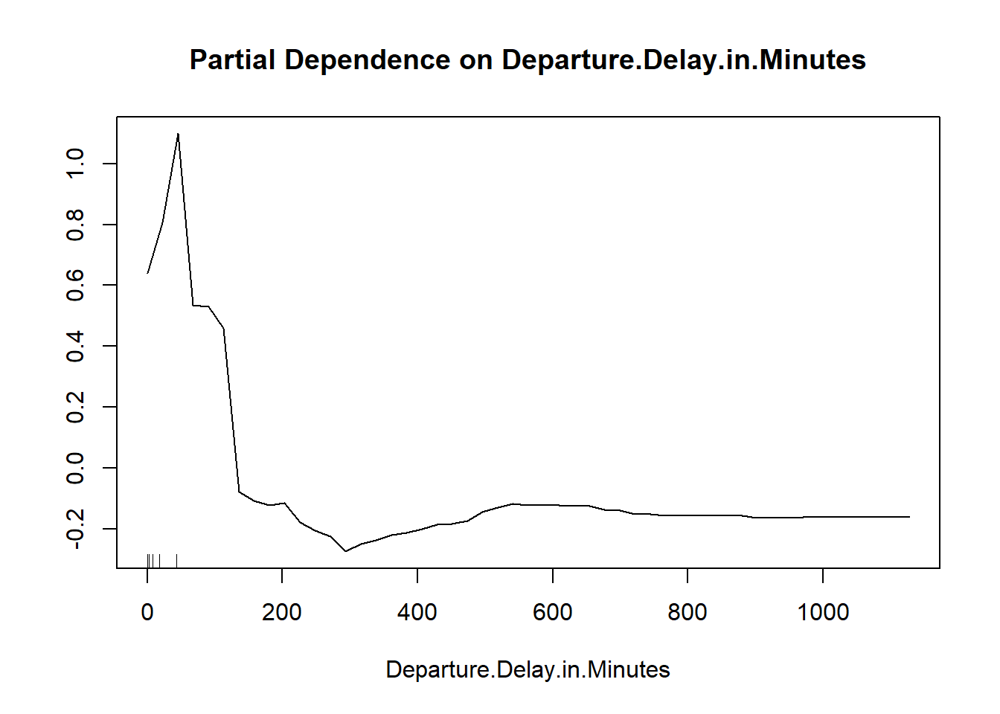

Chapter 3 Random Forest
Then we will try the Random Forest model
Results of Random Forest model
## [1] 0.9631198Details of the random forest model
##
## Call:
## randomForest(formula = satisfaction ~ Gender + Customer.Type + Age + Type.of.Travel + Class + Flight.Distance + Inflight.wifi.service + Departure.Arrival.time.convenient + Ease.of.Online.booking + Gate.location + Food.and.drink + Online.boarding + Seat.comfort + Inflight.entertainment + On.board.service + Leg.room.service + Baggage.handling + Checkin.service + Inflight.service + Cleanliness + Departure.Delay.in.Minutes + Arrival.Delay.in.Minutes, data = train, controls = cforest_control(mtry = 2, mincriterion = 0))
## Type of random forest: classification
## Number of trees: 500
## No. of variables tried at each split: 4
##
## OOB estimate of error rate: 3.71%
## Confusion matrix:
## neutral or dissatisfied satisfied class.error
## neutral or dissatisfied 57695 1184 0.02010904
## satisfied 2667 42358 0.05923376We can see that the random forest model did yield better accuracy than the logistic regression model. From the variable importance plot, the online-boarding, wifi-service and class variables have the most importance. 
Although random forest is not very interpretable, there are some ways; One of them is partial dependence plot. Obviously we can not create partial plots for every variable; To connect with a challenge that we encounter earlier, we will build a partial dependence plot between the ‘Departure delay’ variable and the target variable. We can see that after 150, it is very unlikely for passengers to give a satisfied feedback. It is demonstrated that the dissatisfaction accumulates very quickly after the delay is more than 30 minutes. This variable is behaving a lot more normal in the random forest model. 